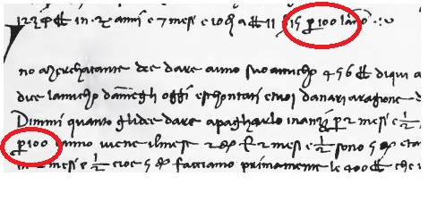

Отпуск на Луне

История возникновения процента
Слово «процент» происходит от латинского слова "pro centum"("за сотню", или "со ста"). Процентами очень удобно пользоваться на практике, поскольку они выражают части целых чисел в одних и тех же сотых долях. Это дает возможность упрощать расчеты и легко сравнивать части между собой и с целыми.
Идея выражения частей целого постоянно в одних и тех же долях, вызванная практическими соображениями, родилась еще в древности у вавилонян, которые пользовались шестидесятеричными дробями. Уже в клинописных таблицах вавилонян содержатся задачи на расчет процентов (рис. 1).
Рекомендации для космических туристов

- До нас дошли составленные вавилонянами таблицы процентов, которые позволяли быстро определить сумму процентных денег.
- Были известны проценты и в Индии. Индийские математики вычисляли проценты, применив так называемое тройное правило, т. е. пользуясь пропорцией. Они умели производить и более сложные вычисления с применением процентов.
- Денежные расчеты с процентами были особенно распространены в Древнем Риме. Римляне называли процентами деньги, которые платил должник заимодавцу за каждую сотню. Например, Октавиан Август взимал налог в размере 1/100 на товары, реализуемые на аукционе, это было известно, как Centesima Rerum Venalium (сотая доля продаваемых вещей). От римлян проценты перешли к другим народам.
- В средние века в Европе в связи с широким развитием торговли особо много внимания обращали на умение вычислять проценты. В то время приходилось рассчитывать не только проценты, но и проценты с процентов, т. е. сложные проценты, как называют их в наше время. Отдельные конторы и предприятия для облегчения труда при вычислениях процентов разрабатывали свои особые таблицы, которые составляли коммерческий секрет фирмы. В России понятие процент впервые ввел Пётр I. Но считается, что подобные вычисления начали применяться в Смутное время, как результат первой в мировой истории привязки чеканных монет 1 к 100, когда рубль сначала состоял из 10 гривенников, а позже из 100 копеек.
- Долгое время под процентами понимались исключительно прибыль и убыток на каждые 100 рублей. Сейчас процент – это частный вид десятичных дробей, сотая доля целого (принимаемого за единицу).
- Знак % происходит, как полагают, от итальянского слова cento (сто), которое в процентных расчетах часто писалось сокращенно cto. До 1425 года для обозначения процента не использовались какие-либо специальные символы. Употребляли итальянский термин per cento (на сотню), в том числе, в сокращенной форме: "per 100", "p 100", "p cento".
- Например, в тексте 1339 года использовалась буква p с горизонтальной чертой, что обычно обозначало сокращение "per", "por", "par", или "pur". В тексте отмечено два употребления "p 100" (рис. 2).